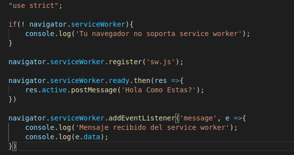
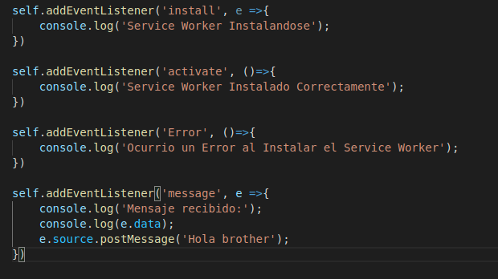

Lección 24 - Service Worker
Definición: Es un archivo JavasScript que intercepta todas las peticiones de un servidor, el navegador en vez de realizar un petición
directa al servidor web, primero pasa por el service worker, de igual manera cuando obtenemos una respuesta de servidor web, hacia el navegador del
usuario esta tambien pasa por el service worker.
Caracteristicas:
- Los service worker corren en el almacenamiento local del usuraio
- Para acceder a los eventos y propiedades del serviceWorker dentro del archivo js, se usa self en vez de this.
- El service worker tiene dos estapas, estapa de instalación y etapa activo, y solo se instala una vez
Eventos
- self.addEventListener('install', e =>{}): Se activa cuando el service worker se esta instalando
- self.addEventListener('activate', e =>{}): Se activa cuando el service worker esta activo
- self.addEventListener('error', e =>{}): Se activa cuando en el proceso de instalació activación ocurre un error.
-
self.addEventListener('fetch', e =>{}): Se activa cada vez que el usuario recarga la pagina, debido a que este evento escucha cada vez
que el service worker intercepta una petición, por lo que cada vez que se recargue la pagina, osea que se realice una petición al servidor
web y este responda pasara por el service worker y activara este evento.
- self.addEventListener('message', ()=>{}): Se activa cuando desde el js normal envian un mensaje la service worker
Metodos
- navigator.serviceWorker.ready.then(res => {res.active.postMessage()}): Valida si el service worker ya cargo
- navigator.serviceWorker.postMessage('holaaa'): Envia un mensaje del js principal al service worker, esete debe ir dentro de la respuesta
de la promesa de navigator.serviceWorker.ready.then(res => {})
- self.source.postMessage('holaaa'): Envia un mensaje del service worker al js principal
Registrar Service Worker: navigator.serviceWorker.register('sw.js');
Codigo JavaScript:

Codigo Service Worker:
